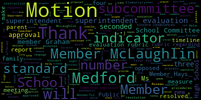
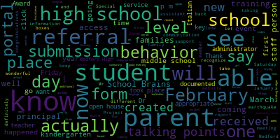
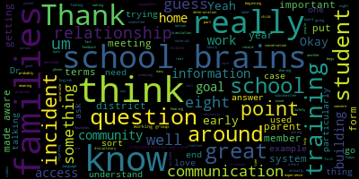
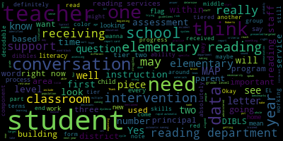
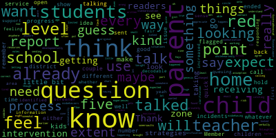
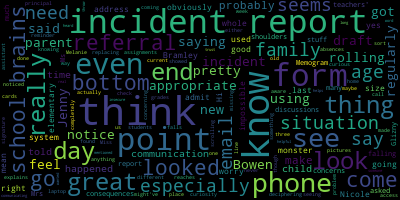

[Lungo-Koehn]: I see superintendent evaluation rubric regarding standard one to make instruction indicator and data informed decision making indicator. The standard one measures motion to from the mass dusty superintendent evaluation rubric regarding standard to management and operations to make the environment indicator and the standard to measure motion three from the mass dusty superintendent evaluation rubric regarding standard three family and community engagement to make the engagement indicator, 3A, sharing responsibility indicator, 3B, and communication indicator, 3C, the standard three measures. Motion four from the DESE superintendent evaluation rubric regarding professional culture, to make commitment to high school standards indicator, 4A, cultural proficiency indicator, 4B, managing conflict indicator, 4F, the standard four measures. Motion five, the committee will use the words exemplary, proficient, needs improvement and unsatisfactory in the superintendent's evaluation for each measure being evaluated. Motion six, the superintendent's evaluation will include the raw data from all members in addition to the summary evaluation of the subcommittee. Motion seven, the school committee will create a new standing subcommittee, the evaluation subcommittee with three members for compilation of the notes and evaluations of individual members and provide a recommendation to the full committee at evaluation time. Motion eight, members Graham, Hayes, and McLaughlin will be assigned to the evaluation subcommittee with member Hays as the chairperson. Motion for approval of the consent agenda. Motion approved. Seconded by member Rousseau, seconded by member McLaughlin. All those in favor? Aye. All those opposed? Consent agenda is approved. We have number four report of subcommittee rules and policy subcommittee minutes, December 6, 2022 table from previous meeting. Member Ruseau.
[Ruseau]: Yes, thank you. I can finally summarize this meeting. So we met on December 6th to discuss the Bullying Prevention and Intervention Plan, which is a policy, even though it's called a plan, the name of the policy is specified in the law itself. So that's why we have to have this rather unusual name for a policy. There were, Member Graham, Member McLaughlin, and myself were present, and we had a host of additional folks from the, from the public as well as the administration. We were sort of, we went through the current document that's on our website and discussed. Well, what we thought we needed to change. You know, there was a lot of conversation. I won't make us sit through it all right now. But there was a couple of really important points made during the meeting. The most important point by far was that the actual policy wasn't bad. It was that it just hadn't been followed. So that makes it a bit of a challenge. If the policy isn't a problem, reviewing the policy for changes can be a very strange conversation, but we had it anyways. So we did, we, we agreed that much or most of the actual content of the policy looked pretty good. We also all agreed that the format of the document was needed some work is the nice way to put it. We talked about ways to actually do that. And, you know, writing policy in a meeting is, is the expectation, but typically a policy is could be a paragraph, it could be a page, sometimes two pages. But this one I believe is 38 pages if I remember correctly. And going line by line through a 38 page document and meetings would mean years of documents, probably at least months of meetings. So we did discuss if we could create a shared Google Doc and we could work on it offline. I did wonder whether that was acceptable or not from the open meeting law perspective. And I did ask the AG's open government office about it. And they said that we could each have our own documents and then bring our suggested changes together. But then again, we're back to the working line by line or paragraph by paragraph through the whole document. And it was interesting, the email didn't quite apologize, but did acknowledge the fact that the open meeting law is really a problem when it comes to things such as what we're trying to do. But anyway, so that's the bottom line is that we will have to go line by line. Hopefully everybody that is interested in providing changes or feedback on the document can bring their own copy to the meeting. We're having another meeting. this month, hopefully February 14th, but I'm waiting to confirm that, where we will start working through this document. And of course, at any time anybody has suggestions for actual change to the policy, we should definitely be talking about that as well. Aside from the how to deal with the document, there was another takeaway that was really well supported in that we should have a visual flowchart of how to deal with bullying and the whole process, as well as the document should be translated, and I don't believe it is right now. So those were the minutes, and I look forward to the next meeting, which is a little later than planned, but that's all.
[Lungo-Koehn]: Thank you, Member Ruseau. Is there a motion for approval of the minutes? Motion to approve. McLaughlin, seconded by member Graham. All those in favor?
[Campbell]: Aye.
[Lungo-Koehn]: All those opposed? Minutes are approved. We have reports of superintendent, number five. First up is superintendent updates and comments, Dr. Marice Edouard-Vincent, superintendent.
[Edouard-Vincent]: Good evening.
[DiBenedetto]: Good evening.
[Edouard-Vincent]: If we could, please let us begin with a moment of silence for all those affected by the horrible earthquake in Turkey and Syria. The earthquake was a powerful magnitude of 7.8 and was one of the strongest to hit the region in more than 100 years. As a Haitian American, I know firsthand the devastation of an awful earthquake. As many members of friends and families are still recovering from the deadly earthquake that took place in 2010, which registered a magnitude of 7.0. Can you please rise for a moment of silence for our friends and neighbors.
[DiBenedetto]: Thank you.
[Edouard-Vincent]: Thank you again. I have a lot of good news to share and wonderful things are happening in Metro Public Schools. And I want us just to be able to focus on some wonderful things. First off, Saturday, which I believe was the coldest day in 57 years or so, our winter color guard placed first in their division, taking home the New England Scholastic Band Association Trophy. So congratulations to the Winter Color Guard for a job phenomenally done. Very proud of you. Additionally, I want to recognize our Mustang Gymnastics Team, the Mustang Girls Indoor Track Team, and the Mustang Boys Hockey Team. They have all won the Winter GBL Championship. So congratulations to all of them as well. Also on a kindergarten note, our first building bridges to kindergarten event took place on January 18 and assistant superintendent Lucy, Megan for the carrier director of family and community engagement and kindergarten teacher. They hosted a packed library, it was a packed house. It was the most that I've ever seen in my five years they just kept coming and coming, and we had to keep pulling out more chairs, and I believe we ended up with over 60. Members of parents and caregivers who came and attended that first kindergarten open house which is absolutely wonderful. I do want people to know that we have another building bridges to kindergarten open house, which is going to take place on Tuesday, February 28, that open house will be taking place by zoom from 630 to 730pm. and the Zoom link will be posted to the school website. Our final Building Bridges to Kindergarten open house will be an in-person event on Thursday, March 30th at 6.30 p.m. And when we have the open houses, the Parent Information Center also stays open later so that parents can register in the evening. I would like to recognize our Project 351 ambassadors, the class of 2023. These students were selected to represent their middle schools. And on Saturday, January 14th, Project 351's 13th annual lunch and service day in honor of Dr. Martin Luther King Jr. and Coretta Scott King took place. Eighth graders, Hannah Brauch, the daughter of assistant principal, Mr. Brauch, at the high school, from the McGlynn Middle School, and Aviva Diaz from the Andrews Middle School. They represented Medford at the statewide service day. They worked on a project that benefits cradles to crayons. The project 351 seeks to build knowledge, skills, and confidence to lead the change they wish to see in our world. It was the first time in three years the program got to meet in person. The students began the day with our new governor, Mary Healy, who expressed her support for this program. We are proud of Hannah and Aviva for their exemplary service and for their values of kindness, compassion, gratitude, and gratitude as they serve as ambassadors for the school year. Also, I'd like to recognize six of our Medford High School art students who were selected for Scholastic Art Awards. The students who received honorable mentions include Stella Heinig for her ceramics and community service submission, Dakota Mahoney for her drained submission, Ethan Sowell for his materialism submission, and Liz Shrestha for the Halloween submission. Abigail Sloan received the Silver Key Award for her Follow the Yellow Brick Road submission. And William Verhagen received the Gold Key and American Visions Award for a Glance Back submission. Special thanks to our art teachers, Ms. Van Wicken and Mr. Smith. Congratulations to these students. What a great accomplishment. I also wanna recognize one of our students, Matteo Davida, a senior at Medford High School, who currently takes AP Italian with Dr. Bebeau. He won an Honorable Mention Award for the Italian News Click for his submission, written in Italian, La Fenice. He is one of four students honored in the creative writing competition sponsored by the Harvard-based Italian language website. Matteo received his award at a ceremony at the Italian Consulate in Boston. Special thanks to Dr. Bobbo, Director of World Languages, and congratulations to Matteo. Fabulous job. Also, CCSR community service students are currently accepting gently worn shoes for the nonprofit organization, Soles for Souls, whose goal is to provide to those in a crisis situation, the very basics, such as shoes. There is a collection box inside the doors of Medford High School's main entrance for any donations. Also, to all of our parents and caregivers, I want to let you know that the extra COVID Supplemental Nutrition Assistance Program, SNAP, created during the pandemic to help families buy food, will end on March 2nd per the Commonwealth of Massachusetts. So the Mass Department of Transitional Assistance has launched a new website mass.gov extra covid snap to help residents plan for the end of these temporary federal benefits. I also wanna just encourage our middle and high school students who love writing that we have a wonderful poetry contest taking place by Medford's own poet laureate, Mr. Terry Carter. You can go to the website and you can get submission details there and all submissions need to be received by March 15th and all genres of poetry will be accepted. Just a few upcoming events that are coming up. This coming Wednesday, February 8th is early release. Our middle school PTOs are welcoming students to skate at the La Conte Rink from 1230 to 2 p.m. The PTOs will be selling pizza and snacks for purchase. Also on Wednesday, February 8th, CPAC will be presenting IEP writing strategies and upcoming IEP format changes with Mr. Alan Bloom from 6 to 8 p.m. on Zoom. This coming Friday, February 10th, MFM, Medford Family Network, will be hosting Friday Night with Knuckle Bones at the high school in the lobby from 4.30 to 7.30 p.m. Also this coming Saturday, the Medford Family Network is hosting their Valentine Fest and Ice Cream Social. It normally takes place at the McGlynn School in the cafeteria. Reservations must be made. So the number is 781-393-2106. And the event runs from three to six p.m. Since we will not be meeting until after February break, I wish all of you on February 14th a happy Valentine's Day. On Friday, February 17th, at the Medford High School, Medford High School and the vocational school together, there will be the Black History Celebration in the gym at 1.30 p.m. And Mayor Longo-Curran and myself will be attending on Friday, February 17th. And for February vacation, it begins on Monday, February 20th, President's Day. It runs the whole week until Friday the 24th. School resumes on Monday, February 27th. We also have our next school committee scheduled for that day. Thank you. Have a good evening.
[Lungo-Koehn]: Wonderful, thank you, Dr. Edwin-Vincent. Member McLaughlin?
[McLaughlin]: Yeah, just point of information, thank you. For the Ice Cream Social, the early part of that event is sensory friendly. So families who have children who are adverse to large crowds or lots of noise can come early on the early end of that.
[Lungo-Koehn]: Three to four?
[McLaughlin]: I think it was 3.15 they were doing the early end. Okay. Thank you. Thank you.
[Lungo-Koehn]: Thank you. Next up, we have presentation of draft parent caregiver incident notice form. Dr. Marice Edouard-Vincent, superintendent.
[Edouard-Vincent]: So good evening. Based on our January 9th meeting, where there was a recommendation from the committee to create a form where incidents could be documented. I shared with you a draft document It's in your packets. I wanted to just share some key pieces of information. During the time that we created this forum, senior leadership met, we met also with principals, and I had the opportunity to meet with principals at all levels, and the assistant principals as well at the high school. I had the opportunity to meet with them. And through the rich discourse, it was really discussed at that point in time, that the recommendation for the incident form would really be used with grades nine through 12, that that's where it would be most appropriate. And so we created the draft form, but from the time of this original report being created back in January and now, we have been able to access or increase access to our school brains portal. And so on this incident form, where it had a limited number of areas, Now on School Brains at the high school level, if a referral is written for a student and the parents are notified by the teacher or the staff person of record, parents and students now have access to the referral portal that is a part of School Brains. So there are multiple categories, you know, over 50 categories. I mean, the mayor is next to me, so she's able to see, but I'm gonna just, what is available online as the referrals are being generated, it's, It's extensive, whether it's challenges on the bus, attendance, inappropriate language, truancy, lack of cooperation. There are cutting class, which is documented in this referral process, disruptive behavior, distribution of substances, or illegal drugs, failure to identify self, failure to report to Saturday detention, if there were to be the sale of tobacco, if there were any kind of smoking materials, it's very expansive what's actually available in the actual portal. And so the staff person of record who is creating the referral goes in and clicks on the boxes, the respective boxes. And then once they click on the boxes, they're able to add comments. So when they reach out to the family, both the student and the parent are able to go in and say, there was a referral created. And it clearly shows once the staff person clicks on the indicator, It has a blue checkmark, and it identifies exactly what took place. So, we were able to get access to this portion which before we did not have access to that so this is a new. It's new and the students report cards, the students that were in the portal, they are now seeing their referrals. And so it's clearly spelled out. And so both the student can see what was documented as a referral and the parent can see it as well, because the parent view is the same as the student view.
[DiBenedetto]: Mayor?
[Lungo-Koehn]: Russo, then member McLaughlin.
[Ruseau]: Thank you. I'm in there right now. I want to one of my children and I do see a new section says referrals. Thankfully, there's nothing listed.
[Campbell]: Yes.
[Ruseau]: But I guess my question is, you know, as a parent who uses school brains, I don't use it. Often I use it when it's report card time. And I don't think I get notices from Schoolbrains when new stuff is in there at all. So, you know, if a student is getting referrals that Schoolbrains has it, it's great, but will the parents still be getting a notice to go look?
[Edouard-Vincent]: So the talking points activity has increased significantly. So the staff person of record is sending a communication to the parent stating that your child did not show up for mathematics today, or your child missed Johnny missed science period two. And we know that Johnny's in school and then he attends the rest of the day so they will see the talking points message, and the parents are now back on talking points. But now that we were able to not only will they get the talking points notification but when they go to the portal, they can actually see exactly what the infractions were that are checked off, and the staff person who is reporting the student. they get to see a referral was entered in what it was that took place.
[DiBenedetto]: Member McLaughlin. Thank you.
[McLaughlin]: Thank you for the work on this, Dr. Robinson. I have a couple of questions. I know that you said this is proposed for nine to 12 to encourage communication via phone or in person for important dialogue from the key eight community. And I think that the real reason for wanting this incident report in the first place was really about encouraging communication across the board. While I understand that the form that is being proposed may not be appropriate or applicable necessarily for K-8 although I have to say we certainly have heard of K-8 suspensions among other things so I wonder about that. I'm wondering if there's a proposal for a K-8 form. My concern primarily is that families are not finding out about these incidents after the fact or worse after several facts, which has historically been the case. And so that's one issue or question I have is so how are we addressing the K-8 issue and making sure that families are made aware of any incidents? I would also just like to add that I think one of the most memorable phone calls home I ever received as a parent was for my child doing really well. And I think it's really important while I know that we're creating structure around incidents that there are opportunities to let families know when children are doing really well as well so that we are building relationships because I think that's the real concern is that sort of deterioration in relationships. So to the school brains point, so the first question is what are we doing for K through eight. And then another question is for the school brains piece. So honestly, I was never a fan of school brains. It was something that you had to, as member Rousseau was mentioning, you had to drive there yourself. We weren't getting notification on. and we were just sort of told to go to school brains. There was no training on school brains, and I wonder if there's training for families on school brains at all. Does anyone orient families to school brains? If so, how, and how is that information shared to our families who are non-English speaking families and or to people who enter the district after the beginning of the school year so that they understand that? Thirdly, I guess I would ask how much participation exists with school brains. So, you know, we know how many students we have enrolled, how many families do we actually have actively enrolled and or engaging with school brains to see if this is an effective means of communication. And then, you know, it begs the question in terms of training for families on school brains, it also begs the question for me on our economically disadvantaged families about access to technology. So I don't know that all of those questions could be answered in this particular meeting, but if we could answer some of them, that would be great. And, you know, if you have to go back to the drawing board for answers to others, I'd be okay with that too, but I'd love to just get some response. Thank you.
[Edouard-Vincent]: So with School Brains, again, at the secondary level, at the high school level grades, there was definitely active participation from parents at the high school level. Midterms and other key communications happened through the School Brains portal. And now seeing When I actually was able to see the actual list of, you know, it's probably about 90 different indicators. The fact that it's already housed in one place so you could see. One of the reasons with adding separate documentation like this. First, it's, it's not going to be able to capture like 90, almost 90 different indicators that I'm looking at. But secondly, In School Brains, not only does it let you know, okay, this happened on February 6th, but if there's more than one referral made, it keeps track of all of that. So you actually have in one spot from the start of the school year throughout, you can go and click and count and say, oh, There were 15 referrals for, you know, inappropriate behavior or cutting class. It's all in one place. And you can see who the different staff people are. So having it within the portal, you're able to keep the data in one place and parents are now able to see who's sending it, you know, they would have received a talking points or a phone call depending on what, you know, what transpired from a staff person, a guidance Councilor, an assistant principal, a principal, reaching out to them to say this, you know, this is what ended up taking place. And they can also now go into the portal and see what the actual referral was about and what was, you know, the time of day, who was the instructor who sent it. So this is now, a new ability that we did not have before. And so I actually, now that it's working, and the students are realizing, like, this is being documented, they can actually see what the referral is for, it's also great with accountability. When you're working with the students and saying, well, this happened on this particular day, and now this is the third event or the fourth event, you're able to just Yes, you're able to better monitor you're able to keep parents up to speed, and parents are able to see, oh, you know, there was a computer violation, or, you know, you know, you were smoking today, or you were attempting to do something that you shouldn't have done and parents are now able to see what the infraction was and support the school in meeting out discipline.
[DiBenedetto]: So, Mayor. Yes, Member McLaughlin.
[McLaughlin]: Thank you. So I, thank you. I appreciate that. Those are in school brains. I guess what I'm asking is, are parents trained on how to use school brains and do they know how to access this material? Is there, you know, what are we doing for translation around that so that we're being equitable in what the access is? And what are we proposing for K through eight?
[Lungo-Koehn]: I can speak to, K through eight has a similar form So a little bit more of just an explanation section and the date. I received one recently on misbehaving at gym class and parent has to sign and send it back.
[McLaughlin]: So if we can have an example of a sample of that for the next meeting, that would be really great. And so that families understand that those are coming home as well. For the K through eight, that would be great.
[Edouard-Vincent]: That's not for K through, was it middle school or was that elementary school?
[Lungo-Koehn]: Elementary school, Robert, does something very similar to this, but it's written and sent home with the parent, parent has to sign and send back. That was Roberts.
[Edouard-Vincent]: So I do know at the when I met with the principals, especially at the elementary level, they were all together. Some of the schools use a slightly different form, but they definitely focus on communicating with parents at the elementary level, because it really should be what's appropriate if it's, you know, a younger child, letting the parent know immediately this is what happened. This is, you know how we're handling it and trying to handle it at an appropriate level in this situation. Yes, there are suspensions that do take place. Not often at the elementary level, but sometimes there are some extreme behaviors that, you know, there needs to be a serious consequence. But that is like the exception and not the norm. Usually, if it's something at that level. You know the parents would receive a phone call the parents may come in for a meeting to speak with the administrator or speak with the teacher to say like this is what the appropriate the inappropriate behavior was and this is our expectation. Next go around. So, you know, you said you received a form about you know. Maybe, you know, excited behavior in phys ed, and then as a mom you were able just to support the district and say like I expect perfect behavior. When you, you know, travel to special specialists or wherever it is. And so that's the hope of definitely trying to have. communication and collaboration, supporting one another in this process. I think at the high school level, where we're dealing with young adults, and in dealing with young adults who are going to be going out into the real world, that what's happening right now, reaching out to the parents through talking points, completing the referral, and the administrators following up on, if it's a staff person, the administrator following up with the parent as well to say this is being addressed, but it's clearly being documented, that it's what is developmentally appropriate. At the middle school level, Again, I do feel that communication with the parents is critically important. And again, if the behavior is truly a behavior that's unacceptable, then there will be consequences for that behavior. But a lot of the behaviors that are being addressed, the administrators and or teachers or staff work in collaboration with the parents.
[DiBenedetto]: Mayor?
[McLaughlin]: Thank you, Dr. Wilbertson. I guess I'm just, I'm not feeling like I'm really getting any answer about what is gonna happen for K through eight. Are they getting, are families getting a form sent home if there's a disciplinary action or if there's something put, more importantly, if there's something put in the student's file regarding the student's behavior or discipline that the parents are formally notified and made aware of it so that they're not finding out five, disciplinary infractions in. So my question is, what about K through eight? And then the other is, what training and access do we have for families for school brains? So training, meaning how to use school brains, how school brains works, what school brains is, access meaning for families that don't have English as their primary language.
[Edouard-Vincent]: So, with the training I would actually I'm going to ask for assistance with tenant Susan glues and Dr Christian if they would wouldn't mind coming up to speak specifically to. how things look differently at the elementary level. In terms of training, I would even ask maybe member Rousseau or member Mustone, do you recall having a special training with school brains? I think some of it's intuitive. I know we have the translators available and Talking Points does translate. But I'm not sure if there's a formalized training so I'm deferring to you guys to also chime in.
[Cushing]: So I think I'm sorry. I think one of the things that we do need to do is to create a formal parent training for our parents as they come into the district and then as best we can, and, you know, really look to the committee to help out to encourage parents to come to the training we can record them on YouTube have them up there as I know. Assistant Superintendent Galussi and Ms. Riccadeli recently did a training that while there wasn't great attendance, it is codified for, it is there on YouTube for people to return to and we'll be able to share it out. So we can work, myself and Ms. Galussi, we can work with Kim Miles, who really is an amazing data representative working with School Brains to put together a training. It is, in large regards, there's not much that is there to confuse parents. On the school district side, it's a very comprehensive system, but on the forward-facing side, not so much for parents and caregivers. But we can definitely put that together. And also, I think that through some conversation, we can also consider rolling this out for six through eight as the system is used comprehensively starting when students enter the sixth grade. So that's another conversation that we can have internally and move forward with. I'll also speak with the necessary people to look into translation and to make sure that's there. But as the superintendent said, the translation is really started through talking points. And then if parents need further translation or want to call them, we can set up using our translation services to have that available for them. And then any other questions you have, we're happy to take them back, work on them and bring them forward again to the committee.
[McLaughlin]: Thank you. I appreciate that. I would just recommend that if videos are being made that yeah, an interpretation service would be great for the videos or the closed captioning with another language or something. So there's an opportunity for interpretation services for that. If there's written material, translation service would be great. if the spoken interpretation services would be really great. And then for the K-8 system, I do have questions about how are the incidents being handled for K-8. And so I think what I'm hearing is they're going to be on a case-by-case basis. And I guess, is that what I'm hearing or no?
[Cushing]: No, okay. No, what I said was specifically around grades six through eight. I think that we can make sure that those are done using school brains. And then what we can do is we can make sure that, well, I'll let Ms. Galussi speak further for elementary, because I don't wanna misspeak.
[Galusi]: Well, as many of you know, from your children for the elementary years, at the elementary level, school brains is really just used for attendance and report card grading. So in terms of this particular conversation around incidents, there's nothing that's uploaded to Schoolbrains. Schoolbrains at the elementary level is not used for teachers to record anything other than attendance and report card grading. I don't think this conversation is shifting that or opening that up, but that's the way it stands right now.
[McLaughlin]: So I guess that's what I'm asking is, so then when there is an elementary level incident, how are families being made aware of an incident that's being filed in the student's school record?
[Galusi]: it should be parent conversations with the staff that was directly involved in whatever the situation was. So that may mean the school principal or the assistant principal. It also may mean support staff in terms of school adjustment Councilors. And it also may mean the teacher,
[McLaughlin]: But if there's something that's put on paper for the student's record, that is not being sent home. It could be a conversation.
[Galusi]: That absolutely should be sent home. Uh-huh, okay. Yes, if there's something, at the elementary level, it's very, it's more conversational and because of responsive classroom, any consequences should be logical and tied to whatever that learning is for the students. If there is something beyond what is typical for that age and grade, and results in some sort of documentation, that parents should absolutely be receiving a copy of that.
[McLaughlin]: And if they're not, what do they do?
[Galusi]: They should have that conversation with the principal. If the conversation needs to go beyond the principal, they can absolutely reach out to superintendent.
[DiBenedetto]: Okay, but so there'll be no form that sort of standard for this. It's that if there's a
[Galusi]: I just, I think, I understand the process for this, and I understand the need for consistency and some alignment, but I also just, I do strongly believe in the developmental piece of things, which is why we brought in responsive classroom, which is why we're really trying to have consequences be logical. I also think as students grow and mature, I still think the first piece should be a lot of that conversation. But when we have an incident in where, like I said, it elevates to a point that's either repeated, and we're getting to be somewhat of like a pattern, and or it's atypical for the grade and age, then parents absolutely have to be part of that conversation. in terms of like documenting this in a district-wide incident form, there's something about that at the elementary level that I don't wanna see situations that should be between school and home for the betterment of the student be relegated to an incident form. I really would like the priority to still be that conversation between school and home at really developmental ages. That's a whole separate there are there are legal forms and template letters that should be completed in instances that involve any sort of removal, we have comprehensive checklist for our principles comprehend sorry.
[Cushing]: We have comprehensive checklists for our principals to use. We have notifications, letters, hearing notices, and a real comprehensive established process for all of our principals and assistant principals to use. when the last effort suspension is utilized and utilized rarely. The other thing, too, that I will say is while the elementary level is using responsive classroom, secondary is really leaning into and embracing restorative justice, circle chats, opportunities for students to really grow. And as they are maturing, as Miss Pelosi said, as they are maturing and growing, to have those conversations as young adults and growing adults through their high school years to have conversations and better understood how that made other people feel, to build that empathy and to build that true understanding of the consequences of their actions beyond just being consequence. Like just consequencing a student doesn't lead to a change in behavior. Hopefully through structured conversations with adults and peers will be able to move students to fully understand the change that's necessary.
[DiBenedetto]: Remember Graham.
[Graham]: I think I'm just trying to understand that like all the parts because I I think one of our biggest problems is consistency and follow through. And if we're adding parts and pieces to already things that are not happening with consistency, like I don't, I don't see how that's going to benefit students or families, frankly. But I think what I'm hearing is that all along school brains had the capability to be alerting parents if things are happening and we just didn't use it. And now we are using it. Is that right?
[Edouard-Vincent]: I'm not sure. I just know that they were able to get access on the referral portion to get it opened. I wasn't on that back end piece to say, how could you let families see referrals that were in the system? And that aspect got opened or unlocked. I'm not sure of the specifics of how it happened.
[Graham]: OK. So if that's the case, then School Brains now has the capability to like display for parents what's happening with their student day to day. That's great news because that didn't exist like a month ago. And then we're also gonna use taught, we're asking teachers to record it in one system and then use talking points to like communicate about it in another system. And then also a form. So I think that just sounds like exactly something where nothing is ever going to happen the way parents are, I think, really asking the district to communicate about. I think it would be my very strong preference that we use our student information system for the capabilities that it must have. I can't imagine that this system that is used across the state, across the country, cannot send emails proactively to parents when a referral is flagged in the system. beyond my comprehension that a system in this day and age would not be able to do that. That is so widely deployed like we're not using something we built, you know, in a, in a lab somewhere, you know, in the back office like we're using a purchased off the shelf software platform. It has to be able to do that. And if it can do that, I don't know why we would create a form that is outside of that, because that is just like another place for the process to fall apart, frankly. And I think like if we're using talking points to have a conversation that makes sense, but I don't want it to be expected that as a teacher, I'm going to put information in a whole bunch of different places. And I'm going to communicate with parents because something is going to give that's going to bring us right back to where we are, which is wildly inconsistent. So I would rather see there be a standard way for Once information goes into school brains, it can be communicated to parents and then teachers can use talking points to have the conversations that they should be having. I don't love this extra form. I think it's adding a lot of weird complexity about like, when do I put it in school brains? And when do I use the form? And I don't think any, I don't think parents wanna make this harder for school to communicate with them. I think we just like are really looking for basic like, flow of information between what is happening in the building that we cannot see when we're at home or at work or wherever, and what you all know to be true and happening in the building. I think we all would love for our kids to come home and tell us all these things, but they're not going to. And we need you to tell us these things So I am not like I am not in love with this form. I think it's basically one of those things that is going to completely fall by the wayside in three months. I would much rather see us invest some energy into actually learning what school brains does and doesn't do and can and cannot do. Because if we didn't know about this, what else don't we know about? I do think it's appropriate if those things are being tracked or could be tracked for six to eight that Again, that could absolutely happen in school brains that doesn't seem like it would be too big of a stretch. And I think I have always had the question about if we are putting student data in school brains about elementary students, why can parents not see that data? Like whatever it may be, and there may be great reasons to not put this kind of disciplinary data in there, but if you're keeping data about my kid in a system, I want access to it. because it's my kid. So I thought during the pandemic, we might have opened that up and that didn't happen, but I think parents are capable of understanding that there are differences between levels. So I would also ask that the district like end that practice of storing data in a system about kids that is not visible to parents. Like I think, and to member McLaughlin's point, like a quick video on a website and more importantly, principles talking about, like, this is how we do this. This is what our community does. This is what our culture and our school operation is all about. That's what is missing. So, like, if we're trying to get at that consistency and that community climate expectations, like, I don't think the form actually gets us there. I'm not tied to the form at all. And if we throw the form out and we do something better, all the better if it is easier and more likely to A, succeed, and B, be around next year at this time, and D, actually make things easier for the people who are having to do this work, because I'm really concerned about that too.
[DiBenedetto]: Dr. Cushing, and then Member Hays, and then Member McLaughlin.
[Cushing]: Do you want me to defer to you, Member Hays? So you bring up all very good points. We will look into, so student information management systems provide a great amount of resources and also simultaneously a tremendous amount of challenges with the multi-level databases that they are and what you think, as all of you here might, and believe it or not, school administrators and leaders, you think might be easy to just push an email when something's submitted has never been that easy through multiple systems I've been a part of. But we can make the call tomorrow to our representatives both within the Medford schools, Kim, and representatives at School Brains to figure it out. The other thing though too is I would actually pause on just like a person submits it and then an email is simultaneously sent to a parent that there's been an incident, because I think then that takes away maybe necessary context that a conversation with an assistant principal or a teacher or someone along the line might have. And so having done those roles, the importance of picking up the phone and having a conversation that goes beyond sending an email home or something like that to make that voice-to-voice contact is so critical in relationship building and then really supporting students through whatever troubles they might be in for the moment, all right, for the moment. So that's one of the thing that I'd like to be able to see, like, when does that email actually get sent?
[Graham]: Yeah, and I think that's a great question. And I think immediate is not always the right answer. Like, you know, maybe it's like a weekly thing or daily thing, I don't know. But I just want to make s consistent that we can sa do this thing in our dist you can expect. I definit that to take the place of any level because I think and hear from humans what's happening with their tiny humans, however tiny or giant they might be like they need to know. So I don't I think you're right like that has to be a priority and if we push too much paper around like that's going to that's the thing that will get lost and and no one will be better for it. And I think to the point of like these information management systems being really complicated, I get it. Like every time you kind of peel back a layer, right, there's something else there about how the system operates. And if we, you know, feel like this is just one of those situations where we need to be in better contact with those experts so that we can do the things we want to do, great. If we feel like this system cannot meet our needs, like there are other ones out there and we should use our our money to buy a new system. Like we just, we shouldn't keep being satisfied with systems that can't meet our needs that create like a huge administrative burden. So I'm open to that. I don't think necessarily that has to be the answer, but I think, you know, we have a platform and we probably in all fairness and through no criticism, like never learned how it ticked or how to use it in a really Deepway, and we lost a registrar a few years back to budget cuts. So there's 100 reasons why we're here. I just want to make sure that if we're saying the system can't do something, somebody needs to ask, are we sure? Because I think we just found out that we're not sure. And those are important things. These systems evolve, and they change, and they're constantly getting features added. So I think that kind of conversation and dialogue is always really important.
[Hays]: Member Hays and Member McLaughlin. I just wanted to come back to the K to five level. I wholeheartedly agree with you that both developmentally and philosophically, we don't want to get into some level with a K to five, the same level that we want to get in the six to eight or nine to 12. I do think there's a little bit of that it feels so open ended that parents don't know what to expect. And correct me if I'm wrong, maybe it's written down somewhere and I'm the parent who hasn't found, hasn't looked at it. I think even being at the same school as the mayor's children, I've had different experiences with different teachers. I had a teacher who sent home little notes if there were misbehaviors that weren't, I don't think were put in a folder anywhere, but it was more the communication to me just to let me know your child is, you know, doing somersaults during circle time. And now I have a teacher who's very good at letting me know verbally, either calling me, sending an email, catching me after school. I think the concern though, I think that the genesis of this original question about parent notification, at least at the K to five level was, you know, I don't know how often this happens, but there were situations that we've been aware of where parents had been brought in after a number of incidents at school. And again, they're, you know, they're, they're small children. They're not huge incidents, some of these, but you know, And in the process of saying, we need to talk about your child, they say, well, all these things happened. You know, these things have been happening. And the parent is like, well, I had no idea. So where in between can we have somewhat of a standardization or some kind of a process that parents will know and the teachers will know that across all schools, it's expected that at this point you contact a parent or you call the parent every time. any, whatever the process would be, but I think it feels, the way we talked about it tonight, it feels very open-ended to an extent where as a parent, I don't really know what I should expect if my child is misbehaving or having any kind of an issue.
[Galusi]: I think that's valid. I think that's very valid. And I hear, you know, where you're coming from. And I think there are definitely situations that are unfortunate, like the one you just mentioned, that I'd hope to say are not typical, but I do think that there's definitely some work still. I mean, there's always work, but I do think there's some work around coming up with those aligned processes with all of the elementary school leaders. But I would probably also bring in maybe some other people for that conversation, but I do think that there is definitely room to work on that. and come up with some more aligned, like a, yeah?
[Hays]: Is that, so I guess the question then, is that something you are working on at this point?
[Galusi]: So I mean, the superintendent can speak. I know she's been having regular meetings with principals, but I think having that subgroup of just the elementary school leaders to create that process, I think would be helpful. Okay, thank you.
[Lungo-Koehn]: Member McLaughlin.
[McLaughlin]: Thank you. Thank you. And I guess I want to thank my colleagues for their input and particularly around the data being entered about students, particularly families and caregivers are not made aware. I think that is really the crux of it. And I think that is relationship building. And so I think sharing that information is relationship building, not sharing that information causes distrust and then a deterioration of relationship. And so that's the thing that I think is really the whole genesis of this conversation is about how are we building relationships to ensure that families know what's going on in school and can help support their child and their teacher and the school and vice versa. So there's that. And so to the point of our goals, when we were talking earlier about school committee goals, I think this is a really good example of ways in which we improve communication, when we're talking about communications across the district, also about systems and processes, and also about family and community engagement. I think this is all a really good example of that and something, you know, as I'm moving forward and we're talking about things, I'm really trying to put in, you know, parenthetical notes about, well, what goal does this actually attach to? in terms of our district and really, you know, trying to think backwards around that. And I think that that is the goal, um, in terms of improving communication, family community engagement and creating systems that are in price. And so to that end, I really, I don't think that we need to make a motion, but if you think we need to make a motion, I'd like to know that particularly around training of families and school brains, because my experience was I think probably partially in the system, you know, in middle school, that there was this, you know, school branches being used. And it was being used at that time, which I'm dating myself, it was probably, you know, six or seven years ago at this point. But at that time, it was being used by one school and not the other. And, you know, so now I think there's more uniformity around it, but really ensuring that there's, you know, maybe a, you know, beginning of the year and a big year training. around what this is for families and that it's multilingual training so that is really helpful for families. And then I would ask, do students who are in out-of-district placements and or in the 18 to 22 transition program have school brains? Okay, so those parents and families obviously need training as well, that they do. Okay, thank you.
[Lungo-Koehn]: Thank you. Member Ruseau, would you like to comment? Yes. Then we'll move on to number three.
[Ruseau]: I have, there's a very, I'm having this very dystopian feeling about this. You know, we talk about being an adolescent, it's supposed to be something meaningful. And if every single thing that all of us did between the ages of zero and 18 was available right now on a webpage, I can assure you that very few of us would be sitting here. And so I'm very concerned about the data retention policies for this. I know that, for instance, discipline related to a diagnosed disability is not supposed to end up in the student record, right? Isn't that the new law that just passed or just went into effect? So that was a determination. Sorry, John.
[Lungo-Koehn]: Yes, that's correct.
[Ruseau]: Thank you. So, I see your head, but not everybody on on screen. So, my question is when is this data entered in by who because data just doesn't you know if after the fact is determined it shouldn't be part of the permanent record. we should all be fully aware by now that there's no such thing as deleting data. So, you know, I think about this stuff, I think about do teachers have access to their new students when they are starting the new school year, they can look at their students and look at their referral records for the previous year and two years and say, oh, I gotta watch out for that Johnny, setting up a dynamic that is already ensuring that Johnny has a problem before Johnny has met his new teacher. So that's something that's deeply concerning to me And I'm not actually expecting you all to have answers to these questions right now I just think it's important to not be so excited that we're doing this. And this last point I was going to make. I really come back and forth on whether to make it but we all grew up knowing kids who were abused by their parents, that's just a fact of life in America, and most countries. Does this have a way to flag that this student's referrals should not automatically be sent to parents on the portal? Because you know what, if my kid comes home and got a referral because they talked back to a teacher once, I'm not going to be happy about it. I'm also not going to harm my child. And we can pretend that there are not families in this town that harm their children, but that's just not true. And I'm worried about the children, but I'm also worried about putting the teachers, because when I was growing up, all the teachers knew which kids were being abused at home. Teachers know that, especially in the earlier grades where you're with the kid all day, every day. And so are we setting up a situation where teachers have to choose between compliance and putting it in school brains, knowing that the kid may not come to school tomorrow, because they need a way to not be seen to probably do what the teachers will do and not put it in. I mean, I would expect teachers to err on the side of kids safety and we all would. So I just wrote this this. There's a goal here, and why we're doing it is an important goal, I just think it feels a bit blunt force and leaves an awful lot of opportunity for student records that become their permanent life story violations of that law that we just had. that just went into effect. And then also putting teachers in frankly, really uncomfortable situations around, I don't want to not report this, but I also know that Johnny's dad's not gonna react in a way that is necessarily in bounds for modern parenting at least. So those are my concerns. And this just seems like a very global, bit celebratory experience I'm having here with the rest of the conversations we're having, and I'm worried about kids like myself whose parents would not have responded in a way that would have let me come to school the next day.
[DiBenedetto]: Thank you. Thank you.
[Cushing]: I guess I'll offer one final comment that I think if you give us time to bring our principals and the assistant principals to form a working group around this, I think that we'll be able to come up with some solutions that address all the concerns, especially the last ones that you just brought up. Because if we have an automatic system that's just going to broadcast messages home, I don't have confidence in honestly any student management system necessarily discerning away from an automatic send. All right. So those are some things. But if you give us some time to maybe work with a working group to really thought map this and to come up with some solutions, I think that may be the best way to go without a resolution. Member McLaughlin.
[McLaughlin]: I think that's a great idea. And I think through the chair to my colleague member Rousseau, I think that's a really important resonating point in point in point. So I think that's great and in the working group I would ask that you consider including families as part of the stakeholders of that working group so that you can have some feedback from community members and diverse community members that can share their experience both around what could work and what might not work. And I'm happy, I'm not trying to give people more work, I'm happy to volunteer in any way that I can to help move that along. But I think that would be really important. And ultimately, the goal is really about building relationships with families and making sure that there are the most positive outcomes for our kids.
[DiBenedetto]: Thank you.
[Lungo-Koehn]: Thank you.
[DiBenedetto]: Ms. Bradley. Thank you.
[Branley]: Hi, Nicole Bramley. I need to admit my address. I think these are really good points. Even the last point, obviously. I just don't know how a whole system is going to say, yes, it should go to this family, but no, we need to worry about this family, especially if it's an email. That seems like a monster. you know, size situation that seems impossible, right? I mean, but I do think in elementary, there are, you know, forms that are used that are age appropriate, you know, consequences that are age appropriate, discussions, you know, all of that stuff. I think Mrs. Glizny had a great point. I think Memogram had a great point too, saying that it's great that we're, rolling things out, but if we're rolling so many things out that are especially falling on teachers' shoulders, that really concerns me because I feel like how much more can they do? And I had asked Ms. Bowen too, is the incident report, this draft, replacing the current incident report? Because there are incident reports. So the incident report, if you come to your assistant principal, and say there's a problem, would that be the new draft form of it?
[DiBenedetto]: Would that be a separate one altogether? Just curious. I can never figure out how to turn it on either, so I get it.
[Edouard-Vincent]: That was in addition to what was already there. That was an additional form that was created. So the other forms that are already at the high school, those ones would continue to be in use, and that was in addition to it.
[Branley]: So I think that that sort of falls to Jenny's point too. So if we have an incident report that we're using, who's deciphering what incident report we're using at what point? If the incident report that I got said, you know, there was this incident and explains it, why that form and not this form, just out of curiosity.
[Edouard-Vincent]: This was just a draft based on what had been said and trying to bring the administrators together to see what else could be created. But then, again, now that we gained the additional access, it was like, This actually gives more information than what the form could ever give. So, I am fully in support of not using that additional time at all and continuing with the talking points. Now that the referral portal is open and parents can actually see, oh, you know, This happened, I received a message, I looked in, I saw it, and the student can actually see it. So they could never see it before. So I actually feel like this is eye-opening for them as well.
[Branley]: Can the students see the same things that the parents see? I know when I look on, I can see their pictures, their grades. absences. They're seeing the same thing. I never looked on it with them. I've only looked on it as a parent. So I'm just curious. So they can see the referrals too. When did that referral go on?
[Edouard-Vincent]: It just, I want to say, is it a week, Dr. Cushing or Ms. Galusi? I don't know. I think it's been about a week. It's fairly recent.
[Branley]: I go on School Brains pretty regularly. I actually have a reminder on my phone to check it pretty regularly just to see missing assignments, anything that maybe I didn't know about. And I did not notice the referral. So I only look on my phone, but I just noticed it's way at the bottom. So I don't know if it's something that.
[Edouard-Vincent]: have all these little tiny boxes.
[Branley]: So, Miss Bowen just showed me that on the laptop but on the phone it looks completely different. So I don't, I just saying that when I look on my phone which is the only place I access school brains. It's done at the bottom. I've probably looked at school brains three times this week, just knowing report cards were coming out. And I didn't even know that that was there or notice it in my scrolling. So just to make a point of that. And then I think when it comes down to really the bottom line, and I think Jenny or Melanie might've said it, it's really just the communication at the end of the day. So the incident report that we got was great if we were told about it too. So we had had some incidents that happened that we were just not even told about at the end of the day, that even had our child's signature on them, which I found very concerning that no email or phone call had happened. So I think you can have a new form, an old form, but at the end of the day, if no one reaches out to you, even though our child made us aware of it, she didn't come home with the form either. So I just think at the end of the day, however we're communicating, as long as the communication is a real time, I think that that probably helps. I think someone mentioned the word trust. And I think that that would have been helpful even in some of the situations that I've heard of, that it does make you feel very insecure. So I just wanted to throw that out there.
[Lungo-Koehn]: So thank you. Thank you. Thank you, Ms. Branley. Member McLaughlin.
[McLaughlin]: Yeah, thank you. I just in final, um, yeah, if there's forms that are being signed by our students, then obviously I think those should go home. Um, but, uh, in addition, I would love to know if we can have some sort of a timeline on, um, when a training can occur, um, on school brains for families and, um, when we might hear back, um, in terms of feedback from a working group. So I'd love to know what the superintendent and or Dr. Cushing and others would think would be a reasonable timeline for that so we can know when to expect more information.
[Edouard-Vincent]: I would say the training for families to learn how to use the talking points. Thank you, school brains.
[DiBenedetto]: 30 to 45 days.
[Edouard-Vincent]: Yeah, I was thinking definitely by March in order to get the training created, whether it's gonna be a video, I'm not sure if it would be, could it be on Zoom and then have it on video or do it like a webinar and then send it out so that everyone knows this is what it looks like with the screenshots and so that they know where to click and again, If you're using a telephone, it's gonna look differently than if you're on a computer, but to at least highlight those key areas for families to be able to look at. So I'm thinking like March, we should be able to have families, the training completed, get families trained, and in March as well, have a working group going. So by the end of March, to be able to report out some information.
[Lungo-Koehn]: Thank you very much. We have number three, report on continued integrated mathematics pathways pilot, Ms. Faiza Khan, Director of Mathematics.
[DiBenedetto]: Welcome.
[Khan]: Yep, there you go. Okay, great. Thank you. Thanks for having me here. I was here almost around the same time last year, and I was here informing the community about our pilot year, the first pilot year, which is going on right now for Integrated Math Pathways 1. integrated math pathways course one. So I would like to start out today by going over the workings of the equity committee. On the high school side, we have about eight teachers. We have gotten together very often. We have read through the sections of a book from NCTM. We have looked at the existing course offerings and discussed the pros and cons of continuing on with this pathway. We have also continued to work and refine on the course descriptions of this pathway. which will be course one, course two, course three. We have looked at different programs that through which we can use, we can teach integrated math pathways to our students on the vocational side and on the high school side. We have reached out to the districts that offer the pathway. They're about to offer it or they have been offering it to pick their brains on what's working and what's not working for them. So currently we are teaching only select lessons from course two and course three, but this was our first pilot year. So we did three sections of English learner math in using the integrated pathways instead of algebra one. And we had in our three general ed classrooms, which are inclusion, we did the integrated math pathways in those general ed classrooms as well. And while I do want to thank the entire eight members of the high school for their hard work, I do want to highlight the work done by Ms. Megan Coyne. She had stayed right Beside me, she continued to take the lead in discussing it. She organized the materials, and she gave me excellent ideas about representing it in multiple formats. So thank you, Ms. Coyne, and thank you so much to the entire equity committee. Next slide is where we look at how mathematics education across the globe takes place versus what we do here in general. On the left-hand side, we see the Algebra I geometry and Algebra II course offerings. This had been happening a lot up until like six or seven years ago. And now we see the shift going towards what we see done universally, which is Math 1, Math 2, and Math 3. When we go to the next slide, It shows us the two pathways, the traditional pathway versus the integrated math pathways. I took this slide right off of my presentation last year. What I do want to highlight on this slide is basically two points. Number one is that algebra one, geometry, algebra two, whether you take that pathway or you take the math one, math two, math three pathway, the end result is going to be the same. And we'll see it in subsequent slides. There is a difference of philosophy. The schools who have done integrated math pathways one, two, and three, they believe that in real life problems do not come in boxes of algebras and geometries. They come in real life situations. So a spiraling math approach is better to teach the students about the skills, and then they can take it and transfer it in real life. And the other thing about the integrated pathway versus the traditional mathematics pathways is that it allows multiple entry points for our EL students and anybody actually that comes to us because now we are globalizing our mathematics education versus just keeping it entirely to the way we learn here in US. Next slide shows us why we should do it. The first one I mentioned, spiraling and interwoven mathematical concepts. So we are not calling it exclusively algebra one, geometry and algebra two, but basically concepts build on each other. And that's how studies have shown that the long-term memory works. We will be through this pathway we continue to push students to continue their practice of math skills, not that you know you learn this in geometry and you took MCAS and now let's put it on the side. We also see the difference in approach of mathematical tasks versus mastering the algorithm, which we are currently doing in Algebra 1 geometry. And Algebra 2 is that you just remember the procedure, and this is how you solve it. Whereas I have learned these skills, and how do I combine them to solve a problem in math and in real life? We also see, and that covers my fifth point here, and the fourth point, we want to shoot for strong problem solving and reasoning skills. Note that, again, I gave you this procedure to solve linear equations, and you shall get to it if you follow step one, step two, and step three. We are hoping to see positive impact on mathematical achievement and better results on the assessments in the longer run. So when we go to the next slide, we see how DESE has proposed it. This is right out of their 2017 frameworks and a presentation that they did. Math 1, Math 2, Math 3 versus Algebra 1, Geometry and Algebra 2. Fourth year is open to taking many different courses. And of course, one big advantage will be able to take the calculus as a fourth year course in your senior year. And we'll see that in subsequent slides if we move on to the next one. This is a very comprehensive chart. I have tried to color code it as much as I could. But one important thing to keep in mind is that this One thing I would like to propose that everybody notices is that there is no more algebra one at the ninth grade level. If students have taken eighth grade algebra at the middle schools, they will be going either to geometry or geometry honors. And all the students from our illustrative mathematics group will be going on to integrated math one. When we move on to the next slide, and I will toggle back to this one shortly. So if we move on to the next slide, this highlights the course pathway for our incoming ninth grade students only. For a more detailed path, I have put a link at the bottom that says course sequence. for MHS math department courses. But over here, if you look at the blue box, you will be able to see that if students enter from their standard eighth grade math class into integrated math one. honors that they will, if they follow that path, that will take them to calculus because what we have done is that pushed and pushed some standards from the year four course and year three course down to our ninth grade and 10th grade level into that honors track, if I may call that. And if we just continue on with the integrated math 1CP, then we have a whole slew of electives that can open up. I do want to address one question that might come to me later on right here, because we are here. The equity committee members have been very cognizant of the fact that our CP students in ninth grade might want to switch the track and get into honors in the 10th grade or in the 11th grade so that they make it to the calculus path. If they want to do that, we are creating a mini work packet, something that we can offer to the students over the summer that they can take catch up with that work and be on the honors track at any point in time. So that gives students a segue because we wanted to be sure that we are meeting the student where they're at and not just compartmentalizing them into a particular track right from the beginning. And that's why I'm hesitant to call it tracking and hesitant to use the word track because tracking is traditionally used for just boxing a student into or labeling them as a CP student or as an honor student. This will take that pressure off of the student and the families and the students will be allowed to go to the honors track any point in time, just as far as they make sure that work is done, the summer work is done. Moving on, our next slide is what the teachers are teaching right now. And again, we'll continue to call it pilot for year two and year three, but we'll take year, first year, which is ninth grade off of that label of pilot. Seems like everybody's in a good comfortable position with that. We are only running CP currently, but we are, um offering cp and honors both this coming school year because we feel like we are in a good position to do that. We have looked at our standards and seen what can be done. Next slide gives you a synopsis of what we are teaching in that integrated math one CP course. There are algebra and geometry sections in that. And then when we move on to the next slide, we go to the integrated math pathway two, which will be piloted this year. We will have at least five to six sections of it because our integrated math CP students from our EL group and our general education group, inclusion group, will move on to this course. So it'll be a pilot for this particular year because this is the first time we are teaching it. If we go on to the slide after this one, you see again that there are some algebra and some geometry concepts here, all mixed up. And one thing is that this integrated math two course will be for sophomore students and they take MCAS towards the end of it. So I'm hoping, we are hopeful as a committee that the spiraling will help students review rather than, you know, again, putting it on the side after ninth grade algebra one. Next slide is the integrated mathematics three. And I plan to be here next year and give you an update on how integrated math one is going and how integrated math two will be going at that point in time. But we'll be getting ready to offer this course next year. And then when we go on to the next slide, here are the topics that are covered in this particular course. Again, one thing to note is that the data analysis and statistics here is much heavier than it used to be. And it used to be mostly in our geometry course. And having it here will keep it fresh in our students' minds for any statistics course or an AP statistics course. And that was the last slide. I just want to say thank you again for having me here and many thanks again to the work of the equity committee, especially the high school group at this point. Thank you. Thank you very much for the presentation.
[Lungo-Koehn]: Thank you. Appreciate it. No problem.
[Khan]: Any questions, please let me know.
[Lungo-Koehn]: No, I think we're good. Thank you. Thanks. Very informative. Number four, we have dyslexia screening and intervention update. Ms. Suzanne Galusi, Assistant Superintendent of Academics and Instructions. Ms. Galusi.
[Galusi]: Hi, good evening. Good evening. Okay, so This, I have a report that was requested by the committee by committee members, Paul Rousseau, Sharon Hayes, and Jenny Graham. And so in typical format to the previous report that I presented to this body, I am going to read the questions that were a part of this report and answer them. So the first one was NWA MAP does not include assessments for nonsense word decoding or rapid automatic naming of letters. Both recommended in the DESE guidelines. How are we assessing those areas? How were we screening prior to MAP? So that is correct. MAP currently, they have just in December of this year rolled out, of course, a new part of their program that includes both of those components if districts so wish to add those on. But in lieu of that, what we've done is, and I've presented to this body before, the elementary reading department teachers, have been trained and received ongoing professional development in DIBLS, which is Dynamic Indicators of Basic Early Literacy Skills program. That fully checks all of DESE's boxes for the dyslexia screening guidelines. And so what those teachers have done is they're assessing all students K to two using the dibbles. So students that do not receive reading services, the reading teachers in every respective building have taken those students and given them the dibbles portions for rapid automatic naming, as well as nonsense word decoding. They're finishing up those assessments actually as we speak. And then as we do with all data, it will be, analyzed, I'll get to that in some subsequent answers. Prior to this, the district, when they piloted Lexia and MAP at the time, the Columbus School, What we did was we created, because we knew that this was a gap then as well, they were created district-wide wind block benchmarks, as well as we used a RAN assessment that used color coding that students received and teachers administered that one-on-one. We made the shift now because we have trained teachers in the DIBLS system. and its best practice. So number two, what number of students have been identified as at risk for dyslexia, lacking specific foundational skills each year in grade levels K through two? So we have our universal screeners, as I've spoken about before, to assess students in the district three times a year. At each cycle, data is analyzed to inform instruction and determine student needs. excuse me, to determine student supports based on the need. And then the level of tiered instruction is decided based on those data sets. So that's consistent with the MTSS model through the Department of Education. And so if students, so the tiered system, tier one whole group, when you move through the tiers, tier two is typically where you see interventions start to be administered to students. Those can happen both in the general education classroom as well as outside of the general education classroom. So I just wanna be really clear that when we see that students need tier two support, it does not automatically result in them receiving reading support. Teachers during that wind block, that targeted intervention time, teachers are also administering tier two supports during that time as well. They're also administering it throughout the day, but I'm just specifically speaking to the wind block, which is when most of the reading services through the elementary reading department are happening. Okay, question three. How many K through two students are receiving targeted intervention? So as I mentioned just a minute ago about the tier two interventions, if I just look at the elementary reading department, which I've explained before, but just for anybody at home, I'll just explain one more time. The elementary reading department is comprised of reading specialists. Those are teachers that typically fall with what people might know as title one. So schools within the district that qualify for title one, some of those teachers may be paid out of that bucket, but we also have like remedial reading or reading specialists that quite honestly, all of them are doing the same job, just that their salaries may be paid out of different buckets. So we're all together in the elementary reading department and we're all aligned because the work is the same. If I look at just that department, because I think this report was really trying to target that, this chart here refers to the number of students for the past five years at each grade level, K to two, within each building that have received reading services. I also put in here to note the number of reading teachers within the elementary reading department that are at each building. So for example, the Brooks has two teachers, the McGlynn has four, the Missituk has three, the Roberts has three. It's important to note that those are not, those are reflective just of the elementary reading department, not of special education or EL, which also take on some reading instruction responsibilities. In appendix B, I also did include the total number of students at each building and within each grade level, because I think it's important to note, because this is gonna come up at a different question, the number of reading staff is based on student need. And so you will see that reflected in that, you know, Population numbers are completely different for some of these buildings. When you're talking about the Mississippi with only 391 students and the Roberts with 552, but one of those buildings qualifies for title one, one does not. And so the reading staff numbers look the same, but because the population is so large at the Roberts, they're able to service the students that they need to, and the MISITUC numbers are quite lower, so they're able to service more students, if I'm making myself clear, based on population. So we do make sure that staffing is equipped for the grade, excuse me, for the school. So question four had several different components. So the first one says, what criteria is used to determine intervention for a student who is identified as at risk by the dyslexia screener? So dyslexia screeners screen a broad area of abilities. And so I just wanted to take what we're now using in the Medford Public Schools, which is the DIBLS assessment platform, just to show you the areas that they're assessing. And so those components are phonological awareness, the ability to recognize and manipulate the sound structure of language, rapid automatic naming, which is the ability to quickly retrieve information from phonological memory. Under the Massachusetts Dyslexia Guidelines, they state that rapid automatic naming refers to students' ability to rapidly name a limited set of repeatedly presented known objects or letters. This is testing the automaticity for students because If students can't retrieve well-known objects or letters, it could flag a reading disability, mostly because what we've learned by brain, how brain interprets and learns how to read, is that orthographic mapping piece. So what are students putting into their memories and able to retrieve? If that's difficulty, that's a flag, but I do wanna put a little like footnote kind of caveat on this one particular area because in kindergarten, some students may show up as a flag because the way this works is the ran part of the assessment is by letters. Okay, so we don't expect students to necessarily know all their letters when this portion is given. By the end of the year, we see a difference in that data, but it's important to note that all the educators are mindful of that, not flagging. kindergarten students at the very beginning. And that's where the multiple measures come in. And we look at other assessment data. So alphabetic principle is another one, the ability to associate letters with sounds to read words. And then word reading, the ability to fluently and accurately read words using sound symbol correspondence and sight word recognition. So those are the pieces that the DIBLs will assess for. Those are the pieces that are flagged. So on the Massachusetts Dyslexia Guidelines, I included the grade levels K, one, and two for what they want to see the dyslexia screeners assess for at all three times of the year, beginning of the year, middle of the year, and end of the year. DIBELS meets all of this criteria that's here in these charts for your reference. What the elementary reading department educators have been trained in and the way that DIBELS is set up is there is a color-coded system when analyzing the data, very similar to MAP. So when I presented on the MAP data with my team, we could see those colors and where The concern, right, is the red and the yellow. We're not concerned with blue and green, and DIBLS is the same. So when teachers are inputting the data, they can see where the flags are. And so when the red colors come up, we're looking at the areas, those four areas I just referred to. Where is it that the students are having difficulty with? Because that is going to target the instruction. So any students that qualify for reading support, we are no longer having teachers assigned to a classroom and you're working with, it used to be like the lowest six students in that group. We are looking at data across the grade level at every school. And we're looking at what the data is showing us about the students that are struggling, those students that are in red that are struggling. We're looking to identify those students and then support them where they are, which is why I take the reading staff and within that, the reading teachers are tiered within what they're providing during that wind block. So that the students that are read, they're going to be with a specific teacher because they're all needing that same content. Another teacher might be taking the students, maybe there's two groups of red, maybe there's another group that's working with the students that are flagged in yellow or in that one area. And so students are never, I'm kind of getting ahead of myself, so this is one of the other questions, but that way students are getting what they need for supports, but they're also not just released back into a classroom. There's a tier, like a step down approach to the reading services that they are getting and that they are receiving. I hope that makes sense. And that way, at each data cycle, we're able to review how we're grouping students, how many days they're receiving, and what the instruction is that they're receiving. And those teachers, when they have the students, they're doing progress monitoring. So they're doing assessments within the three benchmarks that we're doing, beginning, middle, and end. Who provides the support? I think I've referenced that in terms of elementary reading, but I've also mentioned that depending on student needs, it may come from special education department, the EL department. I think it's important to note though that there are several EL students receiving both EL services as well as elementary reading department services. And it's very important to just clarify again that students all should be receiving tiered instruction from their classroom teachers as well. So any student that is going out to the elementary reading department also should be working with their classroom teacher on the same targeted needs. C, does the amount of support at each building differ? I think I covered that one, hopefully. What is the exit criteria, which I've spoke to a little bit. I can just drill that down a little bit. We use, the multiple measures of data, but when we're looking at the dibbles and the map, we are making those decisions, as I just said, based on the tiered needs that the students have. I'm in the middle of those conversations right now with some of the schools, there is some shifting. So there are some students that may not require all five days because they're approaching like that next color coding. And so they're, going to be working on the skills they need to have them ready to transition back into the general education classroom. All of those decisions are made at the school level. There are conversations based on data with the reading team, the principals, and myself. And I do think, I don't, there was a question here on communication, but I do wanna just say all decisions that are made about students being selected, not selected, excuse me, qualifying for reading services, that was a poor choice of words. as well as when the data has shown that they're ready or no longer need those services. All of that is communicated with families. There is a letter and purposely that letter includes all reading staff names on it because their services are fluid depending on the tier of instruction they need with the reading staff. How is progress monitored of at-risk students who are not receiving interventions? It's the expectation of Medford Public Schools that all students are receiving interventions if needed. If you want to drill down on that or ask me more specific questions, I would be happy to answer that. How are parents notified? So we've already highlighted about talking points. Parents receive their child's MAP assessment data. Every time it's administered, it will go home at elementary. For the first one, it's the report card conferences. And then for each one, the middle of the year, it will be sent home. And then at the end of the year, it goes home with the report card on the last day. In addition to that, I just mentioned the communication if students are receiving services. And if students are really struggling, there are sometimes students that, you know, they're a little slower to making progress, or you're having these level of interventions, and they're still not the level of progress you want to see. And so oftentimes, that's when the student support system should be used, and teachers will put the student through the SST. One of the first steps of the SST is notifying the parent. So they should be notified that there's some additional concerns that they would like to look at with their child. And that should happen first. And then they go through the team process to see if there are other interventions. or other needs. What does a typical tier two intervention look like from a staffing perspective? It's based on the specific need of each individual student. So I think the piece I would just reiterate again with this, to not sound too redundant, is that some tier two interventions are done by classroom teachers in small group settings. Some tier two interventions may be outside of the classroom by the elementary reading department or an EL teacher. And so it depends really on the student need. And it's fluid based on data cycles. So in the future, can updated data regarding students identified at risk and receiving intervention and students exiting from intervention be provided at each MAP update? Yes, it can. I can absolutely do that. But I do wanna just caution again that MAP is one form of data. We're now also using the DIBLS data, which I'm still in conversations about. There's a lot of movement to be made and not a lot of time. And so I'm really cognizant of the fact that we need a new elementary core literacy program. And that's what we're working on right now is that process so that next year there'll be a new literacy program which will be providing elementary teachers with a much more aligned program to the science of reading and to their tier one instruction, which is crucial. Because the materials they have right now are outdated and teachers need more because students need more. And so I'm really excited for that and for the professional development that is going to be crucially needed next year. And so, but we also have the DIBLS piece, which is why it's brought in with the elementary reading department. But I think for right now, that's where it's living. And so we're going to be having conversations about what that will look like next year. Because there are many districts that have their reading staff assess all the students. And that might make sense for us for next year because we cannot, we just can't put so much on classroom teachers. But I also have to say that the process is important, but the conversations are equally important because sometimes the students that may flag in one component of the test, but not in the other or may flag on map, but not on dibbles. Like those conversations are important so that we can really target what the student needs. And I don't want to, I just want to be mindful of like, we really try to have those conversations about the whole child and how to best meet their needs. I hope that was helpful, but in like more detail, please let me know.
[Lungo-Koehn]: Thank you very much, Ms. Colucci. Member Hays.
[Hays]: I feel like we're all getting very tired, but if I could just a couple of quick questions, and thank you. I met with you for quite a while to go over some of this, and I really appreciate that. And just a couple of quick clarification. I think these were things we already talked about privately, but good to talk about them here. So that question number five about how is progress monitored of at-risk students who are not receiving intervention. So the gist of that question was an assumption on my part that I think is true in every district that every district has limited resources. And so to the extent that I guess the question being when students have that red or in that red zone or whatever they want to call it, red flagged, Are we able to service, do we automatically service every child who's in that red zone?
[Galusi]: Yes, but I also want to say that it's also looked at, if there's like one, there are multiple components to it. If there's like one area that's, let's just say like indicating red, but there's no other data to support that, then that might be an anomaly in where that student may be monitored by elementary reading staff. And there may be another opportunity to do progress monitoring. before you get to the three benchmarks of middle of the year and end of the year. That might be the only anomaly, but otherwise, those are the students that we're looking at first in being serviced, yes.
[Hays]: I think a lot of this, too, kind of harkens back to something we were talking about earlier, that idea of what can parents hold onto to understand that if my child, if it gets to report home, I don't know if the report shows red, you know, for, I don't remember what the dibbles, I did it a while ago, but I don't remember anymore. And I think it's changed. Does a parent report go home that show where parents would see, oh, my child's in the red zone for this, this and this. And so I guess that question being, and there was a flow chart that you, you linked to, and I know we talked a little bit about, is there a way to maybe, flesh that out a little bit for parents to the extent that you can with the understanding that teachers use their professional judgment in terms of looking at multiple pieces of information. But again, something that parents can hold on to if they see, they feel their child is struggling and also see that they're getting this report that says, yeah, your child did struggle on this assessment in this area. How are we communicating to parents that you should expect or you can expect that we will be intervening or that we will be contacting you to talk about whether we need to intervene and what we're doing.
[Galusi]: I think that's probably a process that I think probably needs a little bit more look at, a little bit more like vetting. I think right now the conversation, if the student is not already identified as needing reading services, but because of this assessment will now require reading services, there's a conversation with the teachers, with the classroom teacher and then with the reading staff that's going to pick up the child and a formal letter is sent home, just as a form of documentation, but because the Dibbles piece is new to the district, this is the first year, so I mean, I guess it's somewhat like of a pilot year, that formalized piece is not, hasn't been set yet.
[Hays]: The other question I had, and again, we've talked about this, for parents whose who have a child who is either receiving the tier two level support or receiving special education support in reading. Is it fair to say that at this point, if they, if their child is being sent home with, or that they are somehow getting information that their child is using leveled readers or is being told to use queuing strategies, such as use the picture to help you. use the context, what would make sense, those three cueing strategies, that it is very appropriate for that parent to question why that's being used, whether they first, they should, obviously I think we talked about first go to the teacher and talk about it, but that, it is fair for a parent at that point to question, given that my child has already been identified as having areas of weakness that would make, those queuing strategies actually be detrimental to their progress? They should question that.
[Galusi]: Yes, that's fine. Yes and yes and yes. But yes to starting the conversation with the teacher, because I really firmly believe in the chain of communication. And so it doesn't make sense to jump one or maybe two chairs when we have to start with the teacher. I have been communicating via the elementary updates that I send to staff about this pedagogical shift from like balanced literacy to structured literacy to the science of reading and so They've received that sort of expectation from me on an ongoing basis. K to two teachers have received training and sustained professional development around that. So that is the expectation. Of course, I would be surprised if we didn't have a few of those anomalies, it would sadden me just a bit, but I think start with the teacher and definitely, and if they're not, if they're not happy with the teacher's response, then I would encourage them to have a conversation with the principal. They could reach out to me. In terms of leveled readers, full disclosure, I think the tricky part about that is that this is another reason why we need a new program. And so, We don't have teachers that have enough materials right now. And so to me, if I were a parent, my conversation would want to be around what is happening in school and how, depending on the level of the child, not every child needs a decodable. So a decodable is the piece that It's that practice for reading that some students need because those phonetic skills they're learning are embedded within that decodable. So the decodables aren't necessarily full of great, you know, plot and it doesn't necessarily always tell this great story because that's not the intent, right? The intent is to practice those skills that they're learning. Not every student needs that. But my question around the materials that are coming home, they have every right to ask the question of the teacher, but I also would encourage them to ask the question about what's the instruction look like in school. If their teacher references not having enough materials, I've been trying through the title monies to build up the decodable libraries of my elementary reading staff. And so I'm hoping there would be enough I'm just offering this. I would hope there would maybe be some resource that people could be collaborative within buildings. But if there's a, if you know of through a parent or someone that there's like a dire need, then I would have them reach out to me. But it definitely speaks to the crucial need for a new literacy program.
[Hays]: I would just want to clarify. So my question pertained to kids who have already been identified as having weaknesses through the screener or otherwise in phonics. So I would suggest they should be taking home decodable readers at that point, that if they're taking home level readers, or maybe that's a conversation, but you know, there certainly are in any classroom, a percentage of kids who don't need decodables, but we're talking about kids who've already been flagged by a screener. And those students should be taking home practice books that.
[Galusi]: I think it's appropriate to have a conversation with the teacher first.
[Hays]: Okay.
[Galusi]: All right.
[Hays]: Thank you.
[Galusi]: And if it's a matter of need and supply, then reach out to me. Yes. And with budget time coming, we should be thinking. Thank you, miss. Thank you.
[Lungo-Koehn]: Thank you so much. I don't believe we don't have any presentations to the public. do not have any continued business. We have new business number 8-20-23-02 offered by member Hays, resolution for new safety and discipline procedures at Medford High School, whereas the Medford Public Schools is committed to understanding and supporting the academic, social, emotional, and physical needs of our diverse student population. Be it resolved that the subcommittee on diversity, equity, and inclusion will meet to review the new safety and discipline procedures at the high school, Data relevant to the implementation of the new procedures will also be reviewed. Member Hays.
[Hays]: Yeah, I don't think, I mean, it's pretty self-explanatory. I think that anytime we start looking at increased adult presence or increased supervision, just that look at it from that particular subcommittee is important to have looking at. And again, looking at the data that I know is already being collected to look at how students are responding to this intervention, or this intervention, these changes in procedures and additional staffing. While we know that some students have already expressed that they're really feeling much safer and feeling more comfortable at school, we also know that there can be populations of students who may not be responding the same way. And we want to look at some of those issues just to make sure that everyone feels they have a voice in this, and that sense of belonging is there for all students. Thank you.
[Lungo-Koehn]: Member McLaughlin?
[McLaughlin]: Thank you. I just also wanted to mention, especially as you're thinking about the subcommittee meeting that the Universal Safety Committee, which is, and does look at the safety regarding students of various populations, be included, explicitly included or invited to that subcommittee meeting. Thank you. So second.
[Lungo-Koehn]: Motion for approval by Member Hays, seconded by Member McLaughlin. All those in favor?
[Campbell]: Aye.
[Lungo-Koehn]: All those opposed? Motion passes. We have 2023-03 offered by Member Graham, Hayes, and McLaughlin. Resolution for the Superintendent Evaluation Committee be it resolved that the Superintendent Evaluation Subcommittee will meet to develop the process to be used for this year's evaluation, including the timeline, templates, and member instructions. Be it further resolved that the timeline will include due dates for all parties and the tentative schedule of subcommittee meetings required to ensure a timely and efficient process. Motion for approval, or if anybody would like to speak.
[Graham]: Member Graham? Yeah, just a quick note to let folks know that we obviously talked about this last week in our committee of the whole. We just wanted to make sure that this motion formally came on the floor, which is part of our rules and procedures around sending things to subcommittee. And we have a tentative meeting date in mid-February that we're already working on. So hoping we will pass this and we can get to work.
[Lungo-Koehn]: Wonderful, motion for approval by member Graham, seconded by member McLaughlin. All those in favor? Aye. All those opposed? Motion passes. 2023-04 offered by member Graham, resolution for proposed fiscal year 24 budget timeline be resolved that the superintendent will provide a proposed process and timeline to create the fiscal year 24 budget for Medford Public Schools no later than March 6th school committee meeting. Motion for approval by- Member Graham, seconded by Member McLaughlin. All those in favor? Aye. All those opposed? Motion passes. There are no reports requested. I believe we just heard from Ms. Galucci on a report. Number 10, we do have a few condolences. The Medford School Committee expresses its sincere condolences to the family of Catherine T. Lopez Natale, former French and Spanish language teacher at Medford High School. and later Director of World Language Department for the Medford Public Schools. The Medford School Department and School Committee expresses its sincere condolences to the family of Anna Lynch, former teacher of the former Waite Elementary School and Brooks Elementary School. The Medford School Committee expresses its sincere condolences to the family of Joseph Danka, cousin of Maria Dorsey, Medford High School librarian. and the Medford School Committee expresses sincere condolences to the family of Thomas Cotter, father-in-law of Sean McGillicuddy, McGlynn Middle School teacher. We only rise for a moment of silence. Our next meeting, regular meeting will be on February 27th, 2023 here at the Alden Memorial Chambers, Medford City Hall, as well as on Zoom. And as- Motion to adjourn. Have a wonderful, next week is Kindness Week, Valentine's Day, and then the city and schools have a number of events for Black History Month, so we hope you join us. Motion to adjourn by Member Graham, seconded by Member McLaughlin.
[DiBenedetto]: All those in favor? Aye. All those opposed? Meeting is adjourned.
|
total time: 7.1 minutes total words: 1025  |
total time: 8.63 minutes total words: 1368 |
total time: 25.89 minutes total words: 3235  |
total time: 0.67 minutes total words: 95 |
|
total time: 10.63 minutes total words: 1767  |
total time: 30.83 minutes total words: 4210  |
total time: 8.29 minutes total words: 1422 |
total time: 7.15 minutes total words: 1218  |
|
total time: 3.88 minutes total words: 679  |
|||
{kind=link}
{kind=link}
{kind=link}
{kind=link}
{kind=link}
{kind=link}
{kind=link}
{kind=link}
{kind=link}